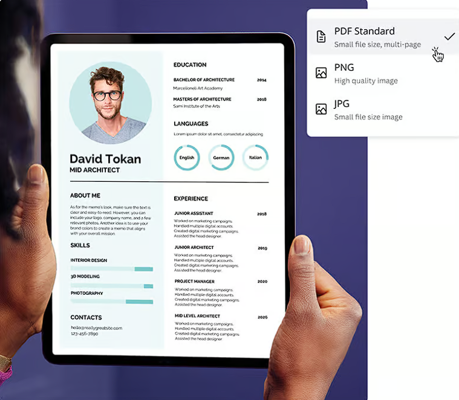

Portfolio.io

Description:
Portfolio.io is a full-featured web application designed to help users—both
technical and non-technical—create personalized portfolio websites quickly.
The platform provides multiple pre-built templates, each crafted for
different styles and professions. Users can choose a template, customize
colors, sections, content, and layout, and instantly preview changes.
Key Features:
Dynamic Template Selection: Implemented a modular template engine where
users can switch templates without losing their content.
Real-time Customization: Enabled on-page live editing for sections like
About, Skills, Projects, and Contact.
User-Friendly Interface: Focused on clean UI and simple navigation to ensure
easy usage even for beginners.
Responsive Design: Ensured all templates adapt perfectly across mobile,
tablet, and desktop.
Technical Implementation:
Built using HTML, CSS, JavaScript for frontend rendering and interactions.
Structured template modules to load dynamically based on user selections.
Designed reusable UI components to maintain consistency across all
templates. Used MySQL for storing user information, portfolio content, and
template configurations.
Impact:
Helped users quickly build professional portfolios, solving a real problem
you faced during job applications—missing out due to not having a ready
portfolio link.